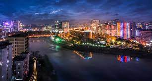
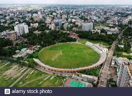
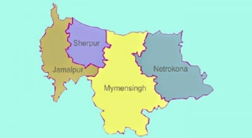

All Divisions of Bangladesh
Bangladesh
Dhaka
Chittagong
Barishal
Khulna
Rajshahi
Rangpur
Sylhet
Mymensingh
Bangladesh


Bangladesh, country of South Asia, located in the delta of the Padma (Ganges [Ganga]) and Jamuna (Brahmaputra) rivers in the northeastern part of the Indian subcontinent.The riverine country of Bangladesh (“Land of the Bengals”) is one of the most densely populated countries in the world, and its people are predominantly Muslim.
As the eastern portion of the historical region of Bengal, the area once formed, along with what is now the Indian state of West Bengal, the province of Bengal in British India. With the partition of India in 1947, it became the Pakistani province of East Bengal (later renamed East Pakistan), one of five provinces of Pakistan, separated from the other four by 1,100 miles (1,800 km) of Indian territory. In 1971 it became the independent country of Bangladesh, with its capital at Dhaka.
TOP
Dhaka


Dhaka Division area 31026.51 sq km, located in between 22°51´ and 25°25´ north latitudes and in between 89°19´ and 91°15´ east longitudes.
It is bounded by kurigram district and Meghalaya state of India on the north, bagerhat, pirojpur, barisal and chandpur districts on the south, sunamganj, habiganj, brahmanbaria, comilla and Chandpur districts on the east, narail, magura, jhenaidah, kushtia, pabna, sirajganj, bogra, gaibandha districts on the west.
Dhaka Division is an administrative division within Bangladesh. Dhaka is the capital city of Bangladesh and also the largest city as well of the country.
It comes among the 10 most populous cities of the world.
TOP
Chittagong
|

|

With its rolling green hills, dense forests, cool climate and broad sandy beaches, Chittagong Division, located in southern Bangladesh, is the second largest of the country's six administrative divisions. It is divided into eleven districts (zillas), namely Chittagong, Cox's Bazar, Rangamati, Bandarban, Khagrachhari,
Feni, Lakshmipur, Comilla, Noakhali, Brahmanbaria and Chandpur. The Chittagong Division is an important agricultural area, as well as being a major supplier of hydroelectric power. The city of Chittagong is the country's most important seaport and a vital commercial and industrial center.
TOP
Barishal

||
Barisal Division area 13295.55 sq km, located in between 21°48' and 22°29' north latitudes and in between 89°52' and 90°22' east longitudes. It is bounded by gopalganj, madaripur and shariatpur districts on the north, bay of bengal on the south, lakshmipur and noakhali districts on the east, bagerhat district on the west.
TOP
Khulna
||
Khulna Division area 21643.30 sq km, located in between 21°60' and 24°13' north latitudes and in between 88°34' and 89°58' east longitudes. It is bounded by rajshahi, natore and pabna districts on the north, bay of bengal on the south, rajbari, faridpur, gopalganj, pirojpur and barguna districts on the east, west bengal state of India on the west. The sundarbans is located in this division covering southern parts of Satkhira, Khulna and Bagerhat districts.
TOP
Rajshahi
||
Rajshahi Division area 18174.40 sq km, located in between 23°48' and 25°16' north latitudes and in between 88°01' and 89°48' east longitudes. It is bounded by west bengal state of India and dinajpur and gaibandha districts on the north, rajbari and kushtia districts on the south, jamalpur, tangail and manikganj districts on the east, West Bengal state of India on the west.
Population Total 16354723; male 51.53%, female 48.47%; Muslim 92.90%, Hindu 6.20%, Buddhist 0.36%, Christian 0.01% and others 0.53%.
TOP
Rangpur
|

|

Rangpur Division area 16320.26 sq km, located in between 25°20' and 26°37' north latitudes and in between 88°50' and 89°53' east longitudes. It is bounded by west bengal state of India on the north, joypurhat, bogra and jamalpur districts on the south, Assam state of India on the east, West Bengal state of India on the west.
Population Total 13847150; male 51.18%, female 48.82%; Muslim 85.70%, Hindu 13.54%, Buddhist 0.34%, Christian 0.03% and others 0.39%.
TOP
Sylhet
|

|
Sylhet Division area 12,298.4 sq km, located in between 23°58' and 25°12' north latitudes and in between 90°56' and 92°30' east longitudes. It is bounded by Meghalaya state of India on the north, tripura state of India on the south, assam state of India on the east, netrokona and kishoreganj districts on the west.
Population Total 8107766; male 50.67%, female 49.33%; Muslim 81%, Hindu 17.80%, Buddhist 0.02%, Christian 0.06% and others 1.12%.
TOP
Mymensingh
||
Mymensingh District (dhaka division) area 4363.48 sq km, located in between 24°15' and 25°12' north latitudes and in between 90°04' and 90°49' east longitudes. It is bounded by Garo Hills and Meghalaya state of India on the north, gazipur district on the south, netrokona and kishoreganj districts on the east, sherpur, jamalpur and tangail districts on the west.
Population Total 4489726; male 2297302, female 2192424; Muslim 4289789, Hindu 168135, Buddhist 27999, Christian 330 and others 3473. Indigenous communities such as garo, Koch, Dalu, Barman and hajong belong to this district.
TOP